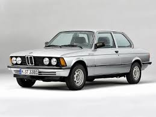
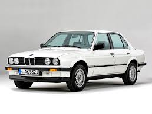
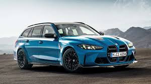

О BMW 3 Series
BMW 3 Series - самая популярная и успешная серия в истории BMW. С момента её дебюта в 1974 году было продано более 15 миллионов автомобилей по всему миру. Эта серия определила стандарты спортивных премиум-седанов и продолжает лидировать на рынке.
3 Series выпускается во всех основных рынках мира и доступна в различных вариантах: sedan, wagon (estate), купе, кабриолет и gran turismo. Серия также имеет высокопроизводительную версию M3, ставшую культовой в автомобильном спорте.
Поколения BMW 3 Series
1-е поколение (E21)
Первое поколение 3 Series. Спортивный седан с 4-цилиндровыми двигателями (от 75 до 122 л.с.). Стал огромным успехом на европейском рынке.
2-е поколение (E30)
Золотой век 3 Series. Выпущено более 2 млн автомобилей. Впервые появилась 325i с 6-цилиндровым двигателем. Культовая серия во всём мире. BMW M3 появилась именно на базе E30.
3-е поколение (E36)
Серьезное совершенствование дизайна и технологий. Впервые появились все типы кузова одновременно. Выпущено более 2.2 млн единиц.
4-е поколение (E46)
Достижение новых высот в дизайне и технологиях. Появились новые двигатели, система iDrive начиналась развиваться. Очень успешное поколение.
5-е поколение (E90)
Революционный дизайн с спорной передней решёткой. Мощные двигатели до 370 л.с. Первый гибридный 3 Series (ActiveHybrid).
6-е поколение (F30)
Более лёгкий и экономичный дизайн. Улучшенная аэродинамика. Мощные двигатели (от 116 до 435 л.с.). Первый полностью гибридный 3 Series.
7-е поколение (G20)
Самое передовое поколение. Выглядит более агрессивно. Двигатели с максимальной мощностью 503 л.с. (M340i). Гибридные и электрические версии. Система iDrive 7.
Текущие модели (2024)
Двигатель: 2.0L дизель
Мощность: 190 л.с.
0-100: 7.7 сек
Расход: 4.2 л/100км

Двигатель: 2.0L бензин
Мощность: 258 л.с.
0-100: 5.8 сек
Расход: 5.8 л/100км
Двигатель: 3.0L бензин
Мощность: 503 л.с.
0-100: 3.9 сек
Расход: 8.2 л/100км
Двигатель: 2.0L + электро
Мощность: 292 л.с.
0-100: 5.7 сек
Запас: 50км (EV)
Двигатель: 3.0L твин-турбо
Мощность: 625 л.с. (Competition)
0-100: 3.6 сек
Привод: AWD
Кузов: Универсал
Объём багажника: 550-1600 л
Двигатели: Все как в седане
Универсальность: Максимум
Сравнение моделей
| Модель | Двигатель | Мощность | 0-100 км/ч | Макс. скорость |
|---|---|---|---|---|
| 320d | 2.0L Дизель | 190 л.с. | 7.7 сек | 225 км/ч |
| 330i | 2.0L Бензин | 258 л.с. | 5.8 сек | 246 км/ч |
| 330e | 2.0L + Электро | 292 л.с. | 5.7 сек | 240 км/ч |
| M340i | 3.0L Твин-турбо | 503 л.с. | 3.9 сек | 282 км/ч |
| M3 | 3.0L Твин-турбо | 625 л.с. | 3.6 сек | 295 км/ч |
Интересные факты
Более 15 миллионов BMW 3 Series было продано за всю историю серии. Это одна из самых продаваемых моделей премиум-класса.
Первая BMW M3 на основе E30 стала легендой в гоночном спорте и на сегодняшний день считается классикой.
BMW 3 Series производится в множестве стран: Германия, Китай, ЮАР, Мексика, Таиланд и другие.
BMW 3 Series регулярно получает награды «Лучший премиум-седан года» от различных автомобильных изданий.

BMW 3 Series часто появляется в фильмах и телесериалах, став символом успеха и стиля.
Современные 3 Series имеют гибридные и электрические версии с минимальным воздействием на окружающую среду.